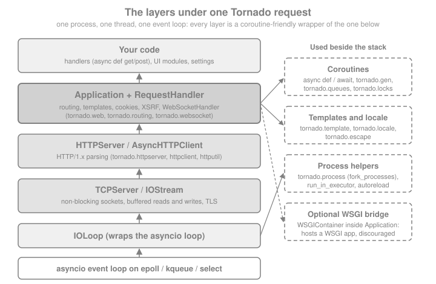

Introduction & Architecture
|
This content was generated with the assistance of AI and should be verified against the official documentation before being relied on in production. |
This page is written against Tornado 6.5.10 (released 2026-09-15), checked on 2026-10-07. Tornado 6.5 supports Python 3.9
and newer; the code on this page uses Python 3.10+ syntax and was executed on Python 3.13. Tornado 6.6 is only available
as the alpha 6.6a1 (2026-09-22) and is announced to require Python 3.11 or newer, so everything described below as
"Tornado 6.6" is upcoming and may still change. The page explains what Tornado is made of, why it is shaped the way it
is and where it fits among Python web frameworks, before the rest of the section builds Bookshelf Live — a
real-time companion to a book catalogue, with a JSON API, a WebSocket chat room per book and a feed of new reviews — step by step.
What Tornado Is
The official documentation describes Tornado as a Python web framework and asynchronous networking library, originally developed at FriendFeed. By using non-blocking network I/O it can serve tens of thousands of open connections, which makes it a natural fit for long polling, WebSockets and other applications that need a long-lived connection to each user. That design goal, not a feature checklist, explains almost every decision in the library: handlers are coroutines, the server and the client share one event loop, and nothing in the framework may block that loop.
The user’s guide names three main parts, and the library also ships a fourth, the coroutine toolkit that ties them together:
| Part | What it provides | Main modules |
|---|---|---|
Web framework |
|
|
HTTP server and client |
A non-blocking HTTP/1.x server (with optional TLS) and an asynchronous client with a pure-Python implementation and
an optional |
|
Asynchronous networking |
The |
|
Coroutine library |
Helpers to run coroutines concurrently and to coordinate them: |
|
Source: Tornado: Introduction
The five lines below put all four parts to work in one process. An Application is served by an HTTPServer, an
AsyncHTTPClient calls it, a TCPServer echoes bytes over an IOStream, and tornado.gen.multi runs two of those
calls concurrently. Everything runs on one thread, on loopback only.
import asyncio
import tornado
from tornado import gen
from tornado.httpclient import AsyncHTTPClient
from tornado.httpserver import HTTPServer
from tornado.tcpclient import TCPClient
from tornado.tcpserver import TCPServer
from tornado.testing import bind_unused_port
from tornado.web import Application, RequestHandler
class Version(RequestHandler): # web framework
async def get(self):
self.write({"app": "Bookshelf Live", "tornado": tornado.version})
class Echo(TCPServer): # asynchronous networking
async def handle_stream(self, stream, address):
data = await stream.read_until(b"\n")
await stream.write(data.upper())
stream.close()
async def main():
http_sock, http_port = bind_unused_port()
http_server = HTTPServer(Application([(r"/version", Version)])) # HTTP server
http_server.add_sockets([http_sock])
tcp_sock, tcp_port = bind_unused_port()
echo = Echo()
echo.add_sockets([tcp_sock])
async def call_http(): # HTTP client
response = await AsyncHTTPClient().fetch(f"http://127.0.0.1:{http_port}/version")
return response.body
async def call_tcp():
stream = await TCPClient().connect("127.0.0.1", tcp_port)
await stream.write(b"hello\n")
reply = await stream.read_until(b"\n")
stream.close()
return reply
# coroutine library: both calls overlap on the single event loop
body, reply = await gen.multi([call_http(), call_tcp()])
print(body.decode())
print(reply)
assert reply == b"HELLO\n"
assert tornado.version in body.decode()
http_server.stop()
echo.stop()
asyncio.run(main())Source: Tornado: Introduction
The script prints the JSON document {"app": "Bookshelf Live", "tornado": "6.5.10"} followed by b'HELLO\n'. The
guide stresses that Tornado gets the most out of the web framework and the HTTP server used together; you can use the
pieces separately (for example the client alone, or IOStream for a custom protocol), but a bigger application should
usually stay inside one consistent stack.
Where It Comes From
Tornado was created at FriendFeed, a real-time social aggregation service whose pages kept a connection open for every visitor to push new items. A blocking, thread-per-request server needs one thread (and its memory) for each of those waiting visitors; a non-blocking server needs only a socket and some bookkeeping. The framework grew out of that requirement and still reflects it: the first concern of every API is "can this wait without holding the process?".
The library has lived through one large change in its internals. Until Tornado 4 it brought its own event loop, its own
Future and its own callback conventions. Tornado 5.0 (2018) rebuilt the IOLoop on top of the standard library’s
asyncio loop and replaced its own futures with asyncio’s, and Tornado 6.0 (2019) removed the old callback-style
machinery for good. That is why code from older tutorials looks so different; the later section on
what changed lists every removal. Today Tornado is an asyncio application framework with its own HTTP stack.
The Layers of a Tornado Process
A Tornado application is built as a stack, and each layer is usable on its own. At the bottom is the asyncio event
loop, which waits on the operating system’s readiness mechanism (epoll on Linux, kqueue on macOS and BSD, with a
select fallback). IOLoop is Tornado’s thin wrapper over that loop: since Tornado 5 the two are the same loop, so
code written for asyncio and code written for Tornado can share it. IOStream turns a socket into an object with
awaitable reads and writes, TCPServer accepts connections and hands each one to your handle_stream coroutine, and
HTTPServer parses HTTP on top of that and hands whole requests to a delegate — normally the Application, which
routes each request to a RequestHandler that you write.

The next snippet makes the layering visible. It checks that IOLoop.current() is the running asyncio loop, that a handler
runs on the very thread that started the server, and that the loop is the one asyncio.get_running_loop() returns.
import asyncio
import threading
from tornado.httpclient import AsyncHTTPClient
from tornado.httpserver import HTTPServer
from tornado.ioloop import IOLoop
from tornado.testing import bind_unused_port
from tornado.web import Application, RequestHandler
MAIN_THREAD = threading.get_ident()
class Where(RequestHandler):
async def get(self):
self.write({
"same_thread": threading.get_ident() == MAIN_THREAD,
"is_running_asyncio_loop": IOLoop.current().asyncio_loop is asyncio.get_running_loop(),
})
async def main():
sock, port = bind_unused_port()
server = HTTPServer(Application([(r"/where", Where)]))
server.add_sockets([sock])
response = await AsyncHTTPClient().fetch(f"http://127.0.0.1:{port}/where")
print(response.body.decode())
assert response.body == b'{"same_thread": true, "is_running_asyncio_loop": true}'
server.stop()
asyncio.run(main())Not WSGI: Its Own Server and One Thread per Process
Flask, Django (in its synchronous mode) and Pyramid are WSGI applications: a separate server such as Gunicorn calls a function once per request on a worker thread or process, and the function returns the response. Tornado is, in the words of its guide, a full-stack alternative to WSGI. It brings its own HTTP server, and the documentation states plainly that Tornado "is not based on WSGI, and it is typically run with only one thread per process". Three consequences follow.
-
You do not deploy Tornado behind Gunicorn. A Tornado
Applicationis not a WSGI callable. Since Tornado 6.0tornado.wsgi.WSGIApplicationno longer exists, so a Tornado application cannot be run under a WSGI server; you start Tornado’s own server, usually in several processes, behind a reverse proxy such as nginx. -
The reverse direction is possible but limited.
tornado.wsgi.WSGIContainerwraps a WSGI callable so that Tornado can serve it, andFallbackHandlermounts it next to ordinary handlers. The docs warn that this loses most of what Tornado is good at — the wrapped application runs synchronously on the event loop unless you give the container an executor (a parameter added in Tornado 6.3) — and recommend using Tornado’s own interfaces directly. -
Concurrency is cooperative. One thread serves every connection. A handler yields control only when it awaits something, so a handler that blocks stalls the whole process. That is the price of tens of thousands of cheap idle connections, and Asynchronous I/O & the Event Loop explains it in depth.
The example below mounts a tiny WSGI function beside a native handler. It is only for illustration; use a real WSGI server for WSGI applications.
import asyncio
from tornado.httpclient import AsyncHTTPClient
from tornado.httpserver import HTTPServer
from tornado.testing import bind_unused_port
from tornado.web import Application, FallbackHandler, RequestHandler
from tornado.wsgi import WSGIContainer
def legacy_wsgi_app(environ, start_response):
body = b"served by a WSGI callable"
start_response("200 OK", [("Content-Type", "text/plain"), ("Content-Length", str(len(body)))])
return [body]
class Native(RequestHandler):
async def get(self):
self.write("served by a coroutine")
async def main():
wsgi = WSGIContainer(legacy_wsgi_app)
app = Application([
(r"/native", Native),
(r".*", FallbackHandler, {"fallback": wsgi}),
])
sock, port = bind_unused_port()
server = HTTPServer(app)
server.add_sockets([sock])
client = AsyncHTTPClient()
native = await client.fetch(f"http://127.0.0.1:{port}/native")
legacy = await client.fetch(f"http://127.0.0.1:{port}/anything")
print(native.body.decode(), "|", legacy.body.decode())
assert native.body == b"served by a coroutine"
assert legacy.body == b"served by a WSGI callable"
server.stop()
asyncio.run(main())One Thread per Process: How Tornado Scales
Because a single process uses a single core for Python code, you use all cores by starting several processes and letting
the operating system share the listening socket between them. The idiom documented for this is to create the sockets
first with tornado.netutil.bind_sockets, then call tornado.process.fork_processes(n) (a value of None or 0 means
"one per core"), and only then create the event loop and the server in each child. The children must not share an event
loop created before the fork, which is why the loop and server are built after it. Forking is a Unix feature; the
documentation says Windows is not officially supported or recommended for production use, and that multi-process mode
is among the features missing there.
The snippet shows the structure. It is not executed here because it forks processes and runs until stopped.
# norun
import asyncio
import tornado.process
from tornado.httpserver import HTTPServer
from tornado.netutil import bind_sockets
from tornado.web import Application, RequestHandler
class Index(RequestHandler):
async def get(self):
self.write("Bookshelf Live")
def make_app() -> Application:
return Application([(r"/", Index)])
async def post_fork_main() -> None:
server = HTTPServer(make_app())
server.add_sockets(sockets)
await asyncio.Event().wait()
if __name__ == "__main__":
sockets = bind_sockets(8888) # 1. bind before forking
tornado.process.fork_processes(0) # 2. one child per CPU core
asyncio.run(post_fork_main()) # 3. create the loop in each childSource: Tornado: Running and deploying
Since Tornado 6.2 the older TCPServer.bind() / TCPServer.start(n) multi-process shortcut is deprecated in favour of
the pattern above. Processes share no memory: anything the handlers must share (sessions, rate limits, a cache of
chat-room members) belongs in an external store or has to be passed explicitly between processes. Running & Deploying
covers running Tornado in production, nginx included.
Blocking Code and Thread Safety
The most common Tornado bug is a handler that blocks. Calling time.sleep, a synchronous database driver, a
requests call or a CPU-bound function such as password hashing on the event loop thread freezes every other
connection until it returns. The FAQ is explicit: time.sleep is a blocking function that does not let control return
to the IOLoop, and the fixes are non-blocking equivalents (asyncio.sleep or tornado.gen.sleep), asynchronous
libraries, or offloading the work to a thread pool with IOLoop.run_in_executor.
The measurement below starts a slow request and then sends a fast one. With a blocking handler the fast request cannot even be read until the slow one finishes; with an awaiting or offloaded handler it is answered immediately. The numbers are timings, so the assertions use generous margins.
import asyncio
import time
from tornado.httpclient import AsyncHTTPClient
from tornado.httpserver import HTTPServer
from tornado.ioloop import IOLoop
from tornado.testing import bind_unused_port
from tornado.web import Application, RequestHandler
STARTED = asyncio.Event()
started_at = {}
def mark_started() -> None:
started_at["t"] = time.perf_counter()
STARTED.set()
class Fast(RequestHandler):
async def get(self):
self.write("fast")
class BlockingSlow(RequestHandler):
async def get(self):
mark_started()
time.sleep(0.5) # blocks the whole event loop
self.write("slow")
class AwaitingSlow(RequestHandler):
async def get(self):
mark_started()
await asyncio.sleep(0.5) # yields to the loop
self.write("slow")
class OffloadedSlow(RequestHandler):
async def get(self):
mark_started()
await IOLoop.current().run_in_executor(None, time.sleep, 0.5) # blocking call in a thread
self.write("slow")
async def seconds_until_fast_answers(port: int, slow_path: str) -> float:
"""Time from the moment the slow handler starts until a fast request has been answered."""
STARTED.clear()
client = AsyncHTTPClient()
slow = asyncio.ensure_future(client.fetch(f"http://127.0.0.1:{port}{slow_path}"))
await STARTED.wait()
await client.fetch(f"http://127.0.0.1:{port}/fast")
elapsed = time.perf_counter() - started_at["t"]
await slow
return elapsed
async def main():
app = Application([
(r"/fast", Fast),
(r"/blocking", BlockingSlow),
(r"/awaiting", AwaitingSlow),
(r"/offloaded", OffloadedSlow),
])
sock, port = bind_unused_port()
server = HTTPServer(app)
server.add_sockets([sock])
results = {}
for name in ("blocking", "awaiting", "offloaded"):
results[name] = await seconds_until_fast_answers(port, f"/{name}")
print(f"fast request answered {results[name] * 1000:.0f} ms after /{name} started")
assert results["blocking"] > 0.45 # had to wait for time.sleep to finish
assert results["awaiting"] < 0.3
assert results["offloaded"] < 0.3
server.stop()
asyncio.run(main())A typical run reports about 500 ms for the blocking case and a few milliseconds for the other two.
Thread safety is the other half of the rule. The docs state that Tornado code is not thread-safe: handlers, IOStream
objects, the IOLoop and most of the API may be touched only from the thread that runs the loop. The two documented
ways to cross the boundary are IOLoop.run_in_executor, which runs a function in a thread pool and returns an
awaitable, and IOLoop.add_callback, the only IOLoop method that may be called from another thread: it schedules a
callable to run on the loop thread at its next iteration.
import asyncio
import threading
from tornado.ioloop import IOLoop
async def main():
loop = IOLoop.current()
loop_thread = threading.get_ident()
done = asyncio.Event()
seen = {}
def on_loop_thread():
seen["callback_thread_is_loop_thread"] = threading.get_ident() == loop_thread
done.set()
def worker(): # runs in another thread
seen["worker_thread_is_loop_thread"] = threading.get_ident() == loop_thread
loop.add_callback(on_loop_thread) # the safe way back to the loop
threading.Thread(target=worker).start()
await done.wait()
print(seen)
assert seen == {"worker_thread_is_loop_thread": False, "callback_thread_is_loop_thread": True}
asyncio.run(main())Source: Tornado: IOLoop.add_callback
Tornado 6.5 added experimental support for the free-threading build of Python 3.13. That does not change the model: the event loop is still single-threaded and still not thread-safe, so the rules above apply unchanged.
When Tornado Fits, and When It Does Not
Tornado earns its place when the workload is many connections that spend most of their time waiting:
-
long polling and server-sent events, where each client holds a request open until there is news;
-
WebSockets, such as the chat room per book in Bookshelf Live;
-
services that make many outbound calls and mostly wait for the replies, using
AsyncHTTPClientor an async driver; -
custom TCP protocols and proxies, written directly on
IOStream; -
embedding an HTTP server in a larger asyncio program: Jupyter Server, for example, lists Tornado as a dependency in its package metadata.
The demonstration holds three hundred long-poll requests open at the same time on one thread, then answers all of them
with a single publication, which is the shape of the "new reviews" feed of Bookshelf Live. Each waiting request costs a
suspended coroutine and a socket, not a thread. The clients connect in waves of fifty because the
operating system’s accept queue is short (128 entries by default for bind_sockets, and often capped lower by the
kernel), so a burst of 300 simultaneous connection attempts from one client would get some connections reset; in
production a reverse proxy absorbs such bursts.
import asyncio
import threading
from tornado.httpclient import AsyncHTTPClient
from tornado.httpserver import HTTPServer
from tornado.testing import bind_unused_port
from tornado.web import Application, RequestHandler
MAIN_THREAD = threading.get_ident()
waiting: list[asyncio.Future] = []
class Feed(RequestHandler):
async def get(self):
future = asyncio.get_running_loop().create_future()
waiting.append(future)
review = await future # the connection stays open, the thread is free
assert threading.get_ident() == MAIN_THREAD
self.write({"new_review": review})
async def main():
sock, port = bind_unused_port()
server = HTTPServer(Application([(r"/feed", Feed)]))
server.add_sockets([sock])
client = AsyncHTTPClient(max_clients=400)
pending = []
for _ in range(6): # six waves of 50, so the listen queue is never flooded
pending += [asyncio.ensure_future(client.fetch(f"http://127.0.0.1:{port}/feed")) for _ in range(50)]
await asyncio.sleep(0.1)
while len(waiting) < 300:
await asyncio.sleep(0.01)
print("open long-poll requests:", len(waiting))
for future in waiting:
future.set_result("Dune: 5 stars")
responses = await asyncio.gather(*pending)
assert all(r.body == b'{"new_review": "Dune: 5 stars"}' for r in responses)
print("answered:", len(responses))
server.stop()
asyncio.run(main())Tornado is a weaker choice when:
-
the application is a conventional server-rendered site or CRUD API whose time goes to CPU work or to a synchronous database layer: you would have to wrap every blocking call, and a WSGI framework with a pool of workers is simpler;
-
you depend on the large catalogue of WSGI extensions and servers, because Tornado cannot reuse them;
-
you want request and response models, validation and an OpenAPI document generated from type hints: FastAPI provides them natively and Tornado does not;
-
you need an ORM, migrations, an admin and authentication decided for you, which Django includes;
-
the deployment target is Windows, which the docs call unsupported for production.
How Tornado Compares
The table compares Tornado with the other Python frameworks this site documents, plus aiohttp. It is drawn from each project’s own documentation, not a ranking: the right choice depends on the team and the application.
| Framework | Foundation and style | Choose it when | Think twice when |
|---|---|---|---|
Tornado 6.5 |
Own non-WSGI HTTP server on the asyncio loop; |
Long-lived connections (long polling, WebSockets) are central, or you need HTTP and custom TCP in one process. |
You want generated OpenAPI documentation or a WSGI ecosystem. |
WSGI microframework on Werkzeug and Jinja; synchronous core, |
Server-rendered pages and moderate JSON APIs with free choice of extensions on ordinary WSGI hosting. |
Thousands of idle connections are the main workload. |
|
ASGI framework on Starlette and Pydantic; type annotations drive validation and OpenAPI. |
Typed JSON APIs with automatic documentation and async by default. |
You want Tornado’s own HTTP server, low-level |
|
"Batteries included": ORM, migrations, admin, auth, forms and templates, on WSGI or ASGI. |
You want the integrated stack and its conventions. |
You want to choose every component yourself. |
|
An ASGI layer that adds WebSockets and other protocols to Django through consumers and a channel layer. |
You already run Django and need real-time features next to its ORM and auth. |
The service is mostly real-time and does not need Django. |
|
An asyncio HTTP client and server library with WebSockets, application-level routing and middleware. |
You want an asyncio-native server and a client in one package and prefer its middleware style. |
You rely on Tornado’s template engine, signed cookies, XSRF and authentication helpers. |
|
Pyramid (2.1) |
A WSGI framework that starts small and finishes big, with URL dispatch or traversal and an explicit security policy; synchronous. |
You need flexible configuration and strong security primitives for a classic request/response application. |
You need native async or WebSockets without extra components. |
Source: Tornado: Introduction
The sibling sections of this site cover those frameworks in depth: Flask,
FastAPI (including how to mount a WSGI application inside it),
Django and Pyramid. Mounting a Flask or
Pyramid application inside Tornado is possible with WSGIContainer, as shown above, and WSGI Interoperability
treats it in detail.
Pitfalls and Security Notes
-
A blocking call is an outage, not a slowdown. One synchronous database call or
requests.getstalls every connection of the process. Find them with the FAQ’s checklist: async driver,asyncio.sleep, orrun_in_executor. -
Never call the loop from another thread. Use
IOLoop.add_callback(orasyncio.run_coroutine_threadsafe) to hand work back; calling handler or stream methods directly from a thread corrupts state in ways that surface much later. -
Do not create the loop before forking. Bind the sockets, fork, then start the loop and server in each child.
-
Two browser tabs look serialised. Browsers deliberately delay a second identical request, so a correct asynchronous handler appears to run one tab at a time; vary the URL (
?x=1,?x=2) or use two browsers before concluding the server is blocking. -
Tornado is not WSGI. Do not point Gunicorn at it; do not rely on
WSGIContaineras a production way to serve a Flask application. -
debug=Trueis a development convenience. It enables autoreload and detailed tracebacks, and must not be enabled in production; Getting Started shows it in context. -
The edge matters. Terminate TLS, compress, buffer slow clients and serve static files at a reverse proxy such as nginx; Tornado’s server is production-capable but is usually run behind one.
-
Keep up with patch releases. Tornado 6.5.x has received several security fixes (for example the multipart parsing denial of service CVE-2025-47287 fixed in 6.5.0, and in 6.5.9 and 6.5.10 symlink handling in
StaticFileHandler,max_body_sizeenforcement in the HTTP clients and an argument-count limit that now also covers query strings), so pin loosely and upgrade promptly.
Recent Changes and Where Older Tutorials Are Outdated
A tutorial written before 2019 shows code that no longer runs. The table lists the items most often met on this subject; What’s Changed & Migration collects the complete list.
| Version | Change | Effect on older code |
|---|---|---|
5.0 (2018) |
|
Code that creates or passes loops explicitly must be rewritten. |
6.0 (2019) |
Python 2 dropped. Removed: |
Callback-style handlers and WSGI-hosted Tornado apps no longer work; use |
6.2 (2022) |
Recommended startup is |
Replace |
6.3 (2023) |
|
Tutorials using the |
6.5 (2025) |
Python 3.9 or newer; Python 3.14 and experimental free-threading support; CVE-2025-47287 fixed; stricter header
and Host validation; |
Move to |
6.6 (upcoming, |
Python 3.11 or newer; new |
Plan the Python upgrade; the release is not final and details may change. |
7.0 (announced) |
Removal of |
Do not build new code on these. |
Source: Tornado: Release notes
Two ecosystem notes complete the picture. Native @gen.coroutine / yield code is legacy and should be translated to
async def / await. And Motor, the asynchronous MongoDB driver historically paired with Tornado, was deprecated by
MongoDB on 2025-05-14 in favour of PyMongo’s native AsyncMongoClient, so new Tornado code should use the latter.
Where to Go Next
The following pages of this section build on this one. Getting Started installs Tornado and runs the first Bookshelf Live
application with asyncio.run; Asynchronous I/O & the Event Loop and Coroutines & asyncio explain the event loop and asyncio
interoperability in depth; Queues & Locks, Applications & Request Handlers and Routing come next, followed by
Templates & UI Modules, Authentication & Signed Cookies, XSRF & Cross-Origin Protection, WebSockets, Async HTTP Client, Databases & Async Drivers, Testing
and Running & Deploying. For Python’s own async model see
Concurrency & Async.
References
-
Tornado: Release notes (development version, 6.6 unreleased)
-
Jupyter Server on PyPI (Tornado listed as a dependency)